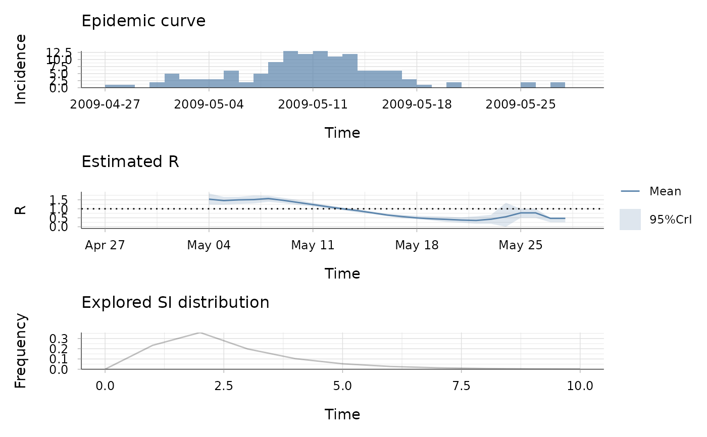

R/wallinga_teunis.R
wallinga_teunis.Rdwallinga_teunis estimates the case reproduction number of an epidemic,
given the incidence time series and the serial interval distribution.
wallinga_teunis(
incid,
method = c("non_parametric_si", "parametric_si"),
config
)One of the following
Vector (or a dataframe with
a column named 'incid') of non-negative integers containing an incidence
time series. If the dataframe contains a column incid$dates, this is
used for plotting. incid$dates must contains only dates in a row.
An object of class incidence
the method used to estimate R, one of "non_parametric_si", "parametric_si", "uncertain_si", "si_from_data" or "si_from_sample"
a list with the following elements:
t_start:
Vector of positive integers giving the starting times of each window over
which the reproduction number will be estimated. These must be in ascending
order, and so that for all i, t_start[i]<=t_end[i].
t_start[1] should be strictly after the first day with non null incidence.
t_end: Vector of positive integers giving the ending times of each
window over which the reproduction number will be estimated. These must be
in ascending order, and so that for all i,
t_start[i]<=t_end[i].
method: One of "non_parametric_si" or "parametric_si" (see details).
mean_si: For method "parametric_si" ; positive real giving the mean serial interval.
std_si: For method "parametric_si" ; non negative real giving the standard deviation of the serial interval.
si_distr: For method "non_parametric_si" ; vector
of probabilities giving the discrete distribution of the serial interval,
starting with si_distr[1] (probability that the serial interval is
zero), which should be zero.
n_sim: A positive integer giving the number of simulated epidemic trees used for computation of the confidence intervals of the case reproduction number (see details).
a list with components:
R: a dataframe containing: the times of start and end of each time window considered ; the estimated mean, std, and 0.025 and 0.975 quantiles of the reproduction number for each time window.
si_distr: a vector containing the discrete serial interval distribution used for estimation
SI.Moments: a vector containing the mean and std of the discrete serial interval distribution(s) used for estimation
I: the time series of total incidence
I_local: the time series of incidence of
local cases (so that I_local + I_imported = I)
I_imported:
the time series of incidence of imported cases (so that I_local +
I_imported = I)
dates: a vector of dates corresponding to the incidence time series
Estimates of the case reproduction number for an epidemic over predefined time windows can be obtained, for a given discrete distribution of the serial interval, as proposed by Wallinga and Teunis (AJE, 2004). Confidence intervals are obtained by simulating a number (config$n_sim) of possible transmission trees (only done if config$n_sim > 0).
The methods vary in the way the serial interval distribution is specified.
———————– method "non_parametric_si"
———————–
The discrete distribution of the serial interval is directly specified in the
argument config$si_distr.
———————– method "parametric_si" ———————–
The mean and standard deviation of the continuous distribution of the serial
interval are given in the arguments config$mean_si and
config$std_si. The discrete distribution of the serial interval is
derived automatically using discr_si.
Cori, A. et al. A new framework and software to estimate time-varying reproduction numbers during epidemics (AJE 2013). Wallinga, J. and P. Teunis. Different epidemic curves for severe acute respiratory syndrome reveal similar impacts of control measures (AJE 2004).
## load data on pandemic flu in a school in 2009
data("Flu2009")
## estimate the case reproduction number (method "non_parametric_si")
res <- wallinga_teunis(Flu2009$incidence,
method="non_parametric_si",
config = list(t_start = seq(2, 26), t_end = seq(8, 32),
si_distr = Flu2009$si_distr,
n_sim = 100))
plot(res)
## the second plot produced shows, at each each day,
## the estimate of the case reproduction number over the 7-day window
## finishing on that day.
## estimate the case reproduction number (method "parametric_si")
res <- wallinga_teunis(Flu2009$incidence, method="parametric_si",
config = list(t_start = seq(2, 26), t_end = seq(8, 32),
mean_si = 2.6, std_si = 1.5,
n_sim = 100))
plot(res)

## the second plot produced shows, at each each day,
## the estimate of the case reproduction number over the 7-day window
## finishing on that day.